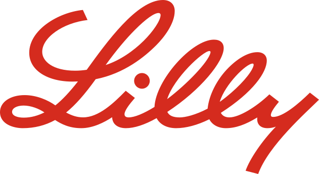
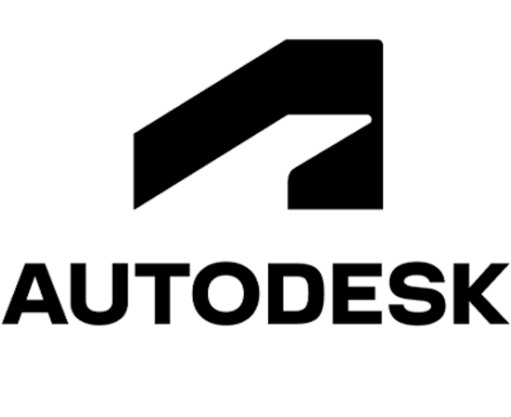
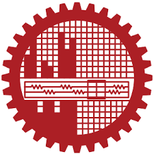
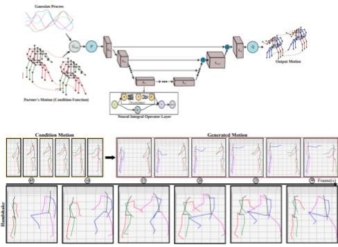

Md Ashiqur Rahman /æʃɪk/ 🎧
I am a final year Ph.D. student in Computer Science at Purdue University, advised by Professor Raymond A. Yeh. I develop consistent and reliable AI systems for computer vision and scientific computing. I have completed my bachelor's degree in Computer Science and Engineering from the Bangladesh University of Engineering and Technology (BUET), where I worked with Professor Md. Shamsuzzoha Bayzid.
My research unifies geometric principles, signal processing techniques, and group theory to improve machine learning models.
Computer Vision: Geometric Deep Learning, Equivariant Neural Networks
Operator Learning: PDE Surrogate Models, Scientific Machine Learning
For feedback, advice, or simply to connect, please feel free to leave an anonymous message.
Operator Learning: PDE Surrogate Models, Scientific Machine Learning
Affiliations
PhD, Purdue University
2021 - Present

Eli Lilly
Summer 2026

Autodesk Research
Summer 2025
NVIDIA Research
Summer 2023

Bangladesh University of Engineering and Technology
2015 - 2019
Updates
May 2026
I will do my internship at Eli Lilly , working on automating drug manufacturing processes.
April 2026
Honored to receive the Bilsland Dissertation Fellowship !
March 2026
I will present my paper on 'Tunable Soft Equivariance' at CVPR 2026 !
Aug 2025
Two papers accepted at ICCV 2025 !
May 2025
I will spend my summer as an AI Research Intern at Autodesk !
April 2025
I will attend ICLR 2025 in Singapore .
December 2024
I will attend NeurIPS 2024 in Vancouver, Canada .
Publications


PaCMO: Partner Dependent Human Motion Generation in Dyadic Human Activity using Neural Operators
Resources
Released resources, datasets, models, and open-source projects.